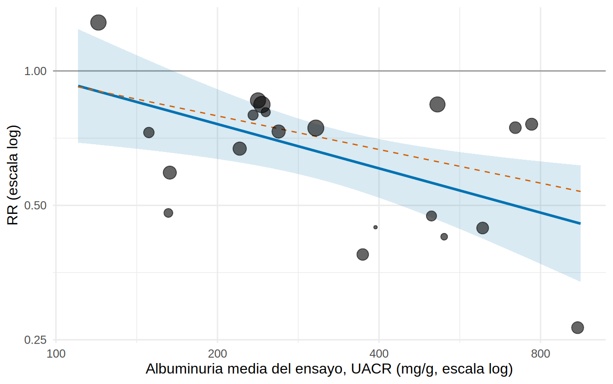
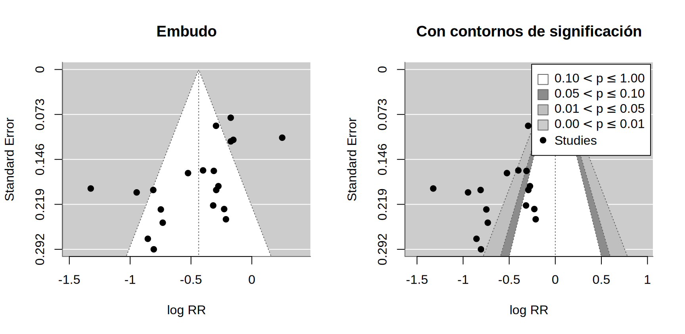
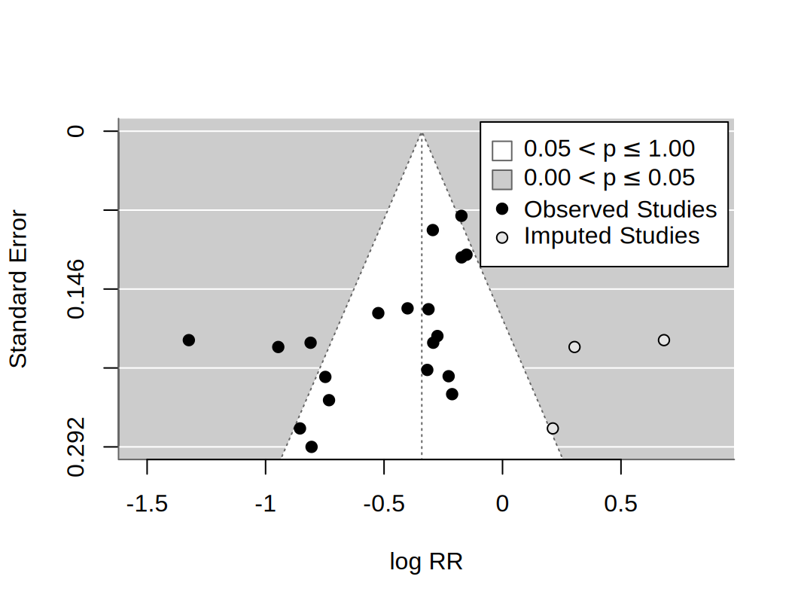

library(tidyverse)
library(metafor)
source("R/funciones_extra_a.R") # num(), pct()
source("R/simular_metaanalisis.R") # solo para repetir el proceso con otras semillas (Paso 5)
theme_set(theme_minimal(base_size = 12))
# 20 ensayos FICTICIOS y su oráculo (log RR verdadero de cada ensayo)
oraculo <- read_csv("Bases/metaanalisis_isglt2_oraculo.csv", show_col_types = FALSE)
ensayos <- oraculo |> select(-theta_verdadero) |> # lo que vería quien hace la revisión
mutate(lu = log(uacr_media / 250)) # log de la albuminuria, centrada en 250 mg/g
pendiente_verdadera <- -0.25 # parámetro del simulador (R/simular_metaanalisis.R)
m <- rma(yi = log_rr, sei = se_log_rr, data = ensayos, slab = estudio, method = "REML") # modelo de 21.4Metarregresión y sesgo de publicación
Nota🩺 Escenario
Tienes el RR agrupado de los 20 ensayos de iSGLT2 (ficticios, 21.4) y sabes que hay mucha heterogeneidad (21.5). Surgen dos preguntas de consulta. Una nefróloga: «¿funciona igual con una albuminuria de 100 mg/g que con una de 900?» Y un epidemiólogo desconfiado: «¿y los ensayos que no salieron bien? Esos no los has visto». La primera se responde con una metarregresión; la segunda, con el gráfico de embudo y sus pruebas, que sospechan del sesgo de publicación pero no lo demuestran.
Lo que vamos a hacer
- Hacer una metarregresión del log RR sobre el logaritmo de la albuminuria media y compararla con la pendiente verdadera (−0.25); ver sus límites (falacia ecológica, poco poder).
- Dibujar el embudo, hacer la prueba de Egger y el recorte y relleno (trim and fill), y saber qué no pueden decir.
- Ver qué hacer cuando hay menos de 10 estudios.
Paso 1: metarregresión
Una metarregresión es una regresión en la que cada ensayo es una observación: el efecto del ensayo (log RR) se explica con una característica suya (aquí, la albuminuria media), ponderando por precisión y dejando τ² residual entre ensayos:
\[ y_i = \beta_0 + \beta_1 \,x_i + u_i + e_i, \qquad u_i \sim N(0, \tau^2_{res}), \quad e_i \sim N(0, EE_i^2) \]
Usamos \(x_i = \ln(\text{UACR}_i / 250)\): así el intercepto es el efecto con 250 mg/g y la pendiente es el cambio del log RR por cada unidad de log de albuminuria. Con el simulador sabemos que la pendiente verdadera es -0.25: a mayor albuminuria, más negativo (más protector) el log RR.
mr <- rma(yi = log_rr, sei = se_log_rr, mods = ~ lu, data = ensayos, method = "REML")
mr_hk <- rma(yi = log_rr, sei = se_log_rr, mods = ~ lu, data = ensayos, method = "REML", test = "knha")
mr
Mixed-Effects Model (k = 20; tau^2 estimator: REML)
tau^2 (estimated amount of residual heterogeneity): 0.0691 (SE = 0.0338)
tau (square root of estimated tau^2 value): 0.2629
I^2 (residual heterogeneity / unaccounted variability): 74.07%
H^2 (unaccounted variability / sampling variability): 3.86
R^2 (amount of heterogeneity accounted for): 33.35%
Test for Residual Heterogeneity:
QE(df = 18) = 59.9778, p-val < .0001
Test of Moderators (coefficient 2):
QM(df = 1) = 7.0954, p-val = 0.0077
Model Results:
estimate se zval pval ci.lb ci.ub
intrcpt -0.3477 0.0776 -4.4806 <.0001 -0.4998 -0.1956 ***
lu -0.3293 0.1236 -2.6637 0.0077 -0.5716 -0.0870 **
---
Signif. codes: 0 '***' 0.001 '**' 0.01 '*' 0.05 '.' 0.1 ' ' 1pend <- coef(mr)[["lu"]]
tibble(modelo = c("REML (normal)", "REML + HKSJ"),
pendiente = c(pend, coef(mr_hk)[["lu"]]),
li = c(mr$ci.lb[2], mr_hk$ci.lb[2]), ls = c(mr$ci.ub[2], mr_hk$ci.ub[2]),
p = c(mr$pval[2], mr_hk$pval[2])) |>
mutate(across(where(is.numeric), \(x) round(x, 3)))# A tibble: 2 × 5
modelo pendiente li ls p
<chr> <dbl> <dbl> <dbl> <dbl>
1 REML (normal) -0.329 -0.572 -0.087 0.008
2 REML + HKSJ -0.329 -0.588 -0.07 0.016Qué vemos.
- La pendiente estimada es -0.33 (IC 95 % -0.57 a -0.09; con HKSJ -0.59 a -0.07, p = 0.016). La verdad (-0.25) cae dentro del intervalo, y la dirección es la correcta. La estimación es algo más intensa que la verdad: con 20 puntos y un IC tan ancho, eso es de esperar.
- Por cada duplicación de la albuminuria, el RR se multiplica por 0.80 (la verdad: 0.84).
- La albuminuria explica 33 % de la heterogeneidad (R² del modelo) y el τ² residual baja de 0.104 a 0.069; el simulador pone un τ residual real de 0.25, es decir, τ² = 0.0625, de modo que queda cerca. Sigue habiendo heterogeneidad residual (I² = 74 %): la albuminuria no lo explica todo.
Con la metarregresión podemos predecir el RR para distintos niveles de albuminuria y compararlos con la verdad:
niveles <- c(100, 250, 500, 1000)
pred_mr <- predict(mr, newmods = log(niveles / 250), transf = exp) |> as_tibble()
tibble(UACR = niveles, RR_estimado = pred_mr$pred, li = pred_mr$ci.lb, ls = pred_mr$ci.ub,
RR_verdad_poblacion = 0.75 * (niveles / 250)^pendiente_verdadera) |>
mutate(across(where(is.numeric), \(x) round(x, 2)))# A tibble: 4 × 5
UACR RR_estimado li ls RR_verdad_poblacion
<dbl> <dbl> <dbl> <dbl> <dbl>
1 100 0.96 0.7 1.31 0.94
2 250 0.71 0.61 0.82 0.75
3 500 0.56 0.47 0.67 0.63
4 1000 0.45 0.33 0.61 0.53rejilla <- tibble(uacr_media = seq(110, 950, length.out = 120)) |> mutate(lu = log(uacr_media / 250))
ajuste <- bind_cols(rejilla, as_tibble(predict(mr, newmods = rejilla$lu, transf = exp)))
ensayos |>
mutate(peso = 1 / (se_log_rr^2 + mr$tau2)) |>
ggplot(aes(uacr_media, exp(log_rr))) +
geom_hline(yintercept = 1, color = "grey60") +
geom_ribbon(data = ajuste, aes(y = pred, ymin = ci.lb, ymax = ci.ub), fill = "#0072B2", alpha = 0.15) +
geom_line(data = ajuste, aes(y = pred), color = "#0072B2", linewidth = 1) +
geom_line(data = ajuste, aes(y = 0.75 * (uacr_media / 250)^pendiente_verdadera), color = "#D55E00", linetype = "dashed") +
geom_point(aes(size = peso), alpha = 0.6, show.legend = FALSE) +
scale_x_log10(breaks = c(100, 200, 400, 800)) +
scale_y_log10(breaks = c(0.25, 0.5, 1, 2)) +
labs(x = "Albuminuria media del ensayo, UACR (mg/g, escala log)", y = "RR (escala log)")
Cada punto es un ensayo, no un paciente. Conviene leer tres advertencias antes de decirle a la nefróloga que «a menor albuminuria, menos efecto»:
- Falacia ecológica. La metarregresión compara ensayos, no pacientes. Un ensayo con UACR media alta tiene muchos pacientes con UACR alta, pero también otros factores que van con él (más diabetes, más tiempo de seguimiento…). La asociación entre ensayos no es la asociación dentro de los pacientes; para eso se necesitan datos individuales (Berlin y cols., 2002).
- Poco poder. Con 20 ensayos y mucha heterogeneidad, solo se detectan relaciones fuertes. La regla habitual es al menos 10 estudios por covariable; con 20, una o dos.
- Pescar covariables. Si pruebas muchas, alguna saldrá «significativa». Nosotros declaramos la albuminuria de antemano (21.1). Probar otras cuatro características (aquí, a modo de contraste) da p = 0.33, 0.79, 0.60, 0.93 (seguimiento, % de diabetes, TFGe y año): ninguna aporta nada, pero con más covariables y menos honestidad algo habría «aparecido».
Paso 2: el gráfico de embudo
Si no hubiera sesgo, los ensayos se repartirían simétricamente alrededor del efecto verdadero: los precisos (arriba) cerca del centro y los imprecisos (abajo) dispersos a ambos lados, como un embudo. El gráfico de embudo (funnel plot) pone el efecto en el eje x y la precisión (EE invertido) en el y.
par(mfrow = c(1, 2))
funnel(m, xlab = "log RR", main = "Embudo")
funnel(m, level = c(90, 95, 99), shade = c("white", "gray55", "gray75"), refline = 0, legend = TRUE,
xlab = "log RR", main = "Con contornos de significación")
par(mfrow = c(1, 1))
En el gráfico de la derecha, el embudo blanco central es la zona no significativa (p > 0.10) respecto de 0 y las zonas grises son las de significación. En un embudo con sesgo de publicación faltan puntos en el lado «no favorable» de los ensayos pequeños, justo donde los resultados no serían significativos. Aquí los ensayos poco precisos (abajo) se cargan hacia la izquierda (a favor del fármaco) y ninguno tiene RR ≥ 1; el único con RR por encima de 1 (MIRA) es de precisión intermedia. Como tenemos el oráculo, podemos comprobar el mecanismo: ¿cuánto se desvía la estimación observada del efecto verdadero de cada ensayo, según el tamaño?
oraculo |>
mutate(tamano = cut(se_log_rr, quantile(se_log_rr, c(0, 1/3, 2/3, 1)), include.lowest = TRUE,
labels = c("grandes", "medianos", "pequeños")),
ruido = log_rr - theta_verdadero) |> # estimación observada - efecto verdadero del ensayo
group_by(tamano) |>
summarise(ensayos = n(), EE_medio = mean(se_log_rr), efecto_verdadero_medio = mean(theta_verdadero),
efecto_observado_medio = mean(log_rr), desviacion_media = mean(ruido)) |>
mutate(across(where(is.numeric), \(x) round(x, 3)))# A tibble: 3 × 6
tamano ensayos EE_medio efecto_verdadero_medio efecto_observado_medio
<fct> <dbl> <dbl> <dbl> <dbl>
1 grandes 7 0.12 -0.191 -0.179
2 medianos 6 0.191 -0.685 -0.695
3 pequeños 7 0.248 -0.404 -0.557
# ℹ 1 more variable: desviacion_media <dbl>Qué vemos. En los ensayos grandes, la estimación observada se desvía del efecto verdadero en promedio 0.01 (casi nada); en los pequeños, -0.15 de log RR (más favorable de lo que es). Es el sello del sesgo de publicación simulado: un ensayo pequeño solo se publica si, por azar, salió favorable, y entonces la parte de «ruido» que sobrevive es sistemáticamente negativa. Pasar del embudo a esa conclusión solo se puede hacer aquí, con el oráculo.
Un efecto parecido se ve al añadir ensayos de menor a mayor error estándar:
orden <- order(ensayos$se_log_rr)
map_dfr(c(5, 10, 15, 20), \(n) {
r <- rma(yi = log_rr, sei = se_log_rr, data = ensayos[orden[1:n], ], method = "REML")
tibble(ensayos_mas_precisos = n, RR = exp(coef(r)), li = exp(r$ci.lb), ls = exp(r$ci.ub))
}) |> mutate(across(where(is.numeric), \(x) round(x, 2)))# A tibble: 4 × 4
ensayos_mas_precisos RR li ls
<dbl> <dbl> <dbl> <dbl>
1 5 0.89 0.75 1.07
2 10 0.73 0.57 0.92
3 15 0.68 0.57 0.83
4 20 0.65 0.55 0.76Con los 5 ensayos más precisos el RR es 0.89; al ir añadiendo ensayos más pequeños se aleja del 1 hasta 0.65. A esto se le llama efecto de estudios pequeños: los ensayos pequeños dan efectos mayores que los grandes. Es un hecho observable; su causa no lo es.
Paso 3: la prueba de Egger
Mirar el embudo es subjetivo. La prueba de Egger (Egger y cols., 1997) lo convierte en un contraste: regresa el efecto sobre su error estándar (en la versión de metafor, dentro del modelo de efectos aleatorios) y pregunta si la pendiente es distinta de cero. Una pendiente distinta de cero significa que los ensayos imprecisos se desvían sistemáticamente en una dirección.
eg <- regtest(m) # metafor, predictor = error estándar (modelo mixto)
eg_lm <- regtest(m, model = "lm") # la versión clásica de Egger: regresión ponderada con dispersión multiplicativa
eg_ajust <- regtest(mr) # lo mismo, pero ajustando por la albuminuria
c(Egger_mixto_p = eg$pval, Egger_clasico_p = eg_lm$pval, Egger_ajustado_por_UACR_p = eg_ajust$pval) Egger_mixto_p Egger_clasico_p Egger_ajustado_por_UACR_p
0.002850396 0.004887110 0.006254486 eg
Regression Test for Funnel Plot Asymmetry
Model: mixed-effects meta-regression model
Predictor: standard error
Test for Funnel Plot Asymmetry: z = -2.9834, p = 0.0029
Limit Estimate (as sei -> 0): b = 0.1836 (CI: -0.2374, 0.6045)Qué vemos. La prueba detecta asimetría: z = -2.98, p = 0.003 (con la versión clásica, p = 0.005). Y persiste al ajustar por albuminuria (p = 0.006): no es que los ensayos pequeños tengan, por casualidad, más albuminuria (la correlación entre EE y log UACR es solo 0.20). La prueba no dice por qué hay asimetría. Las causas posibles son:
- Sesgo de publicación (lo que sabemos aquí que pasa) y de notificación de desenlaces: los ensayos pequeños con resultados poco llamativos no se publican, o se publica otro desenlace.
- Calidad metodológica: los ensayos pequeños suelen ser de peor calidad (en nuestros datos, 21.3: los dos ensayos de alto riesgo global tienen menos pacientes que la mediana) y exageran el efecto.
- Heterogeneidad verdadera: los ensayos pequeños pueden reclutar poblaciones distintas (por ejemplo, con más riesgo) con efectos mayores.
- Azar, sobre todo con pocos estudios.
El «punto de corte» extrapolado de la regresión (el efecto estimado para un ensayo con EE = 0) vale RR = 1.20 (IC 0.79 a 1.83): la extrapolación sugeriría que no hay efecto, lo que contradice la verdad (0.75) y a los ensayos grandes. Es un ejemplo de por qué no conviene «corregir» con esa extrapolación cuando hay heterogeneidad.
Paso 4: recorte y relleno
El recorte y relleno (trim and fill, Duval y Tweedie) imputa los ensayos que «faltarían» para que el embudo fuera simétrico y recalcula el efecto con ellos:
tf <- trimfill(m)
tf
Estimated number of missing studies on the right side: 3 (SE = 3.0030)
Random-Effects Model (k = 23; tau^2 estimator: REML)
tau^2 (estimated amount of total heterogeneity): 0.1653 (SE = 0.0609)
tau (square root of estimated tau^2 value): 0.4066
I^2 (total heterogeneity / total variability): 86.63%
H^2 (total variability / sampling variability): 7.48
Test for Heterogeneity:
Q(df = 22) = 128.2820, p-val < .0001
Model Results:
estimate se zval pval ci.lb ci.ub
-0.3407 0.0939 -3.6277 0.0003 -0.5247 -0.1566 ***
---
Signif. codes: 0 '***' 0.001 '**' 0.01 '*' 0.05 '.' 0.1 ' ' 1funnel(tf, legend = TRUE, xlab = "log RR")
Qué vemos. Imputa 3 ensayos en el lado derecho. El RR «ajustado» sube de 0.65 a 0.71 (IC 0.59 a 0.86), más cerca de la verdad de la población (0.75) que el original. No te fíes de esa suerte. El método tiene límites importantes:
- Supone que la asimetría es sesgo de publicación, y que los ensayos faltantes son el espejo exacto de los observados. Si la asimetría tiene otras causas (calidad, heterogeneidad), «corrige» lo equivocado.
- Con heterogeneidad alta funciona mal: aquí el τ² pasa de 0.104 a 0.165 al imputar, porque los ensayos «rellenados» no son datos.
- Es un análisis de sensibilidad, no una corrección: se informa como «si hubiera sesgo de publicación de esta forma, el efecto sería menor, pero seguiría a favor» (0.71, IC 0.59 a 0.86).
Resumimos las distintas «correcciones» y la verdad conocida:
tibble(estimacion = c("Efectos aleatorios (todos los ensayos)", "Recorte y relleno", "Los 10 ensayos más precisos",
"Los 5 ensayos más precisos", "Extrapolación de Egger (EE = 0)",
"Verdad: media de los 20 ensayos (oráculo)", "Verdad: población de ensayos"),
RR = c(exp(coef(m)), exp(coef(tf)), exp(coef(rma(yi = log_rr, sei = se_log_rr, data = ensayos[orden[1:10], ]))),
exp(coef(rma(yi = log_rr, sei = se_log_rr, data = ensayos[orden[1:5], ]))), exp(eg$fit$beta[1]),
exp(mean(oraculo$theta_verdadero)), 0.75)) |>
mutate(RR = round(RR, 2))# A tibble: 7 × 2
estimacion RR
<chr> <dbl>
1 Efectos aleatorios (todos los ensayos) 0.65
2 Recorte y relleno 0.71
3 Los 10 ensayos más precisos 0.73
4 Los 5 ensayos más precisos 0.89
5 Extrapolación de Egger (EE = 0) 1.2
6 Verdad: media de los 20 ensayos (oráculo) 0.66
7 Verdad: población de ensayos 0.75Ninguna «corrección» recupera de forma fiable el 0.75: las que quedan cerca lo hacen por suerte; la extrapolación de Egger se pasa de largo (RR > 1) y los 5 ensayos más precisos, que apenas sufren selección, dan 0.89 en parte por ser un subconjunto pequeño: en el oráculo, el efecto verdadero medio de los 7 ensayos más grandes es RR 0.83, no 0.75. La mejor defensa contra el sesgo de publicación no es estadística: es buscar los ensayos que no aparecen (registros de ensayos, literatura gris).
Paso 5: ¿qué se puede detectar con pocos estudios?
Las pruebas de asimetría (y los embudos) necesitan estudios. La recomendación habitual es no hacerlas con menos de 10. Lo comprobamos repitiendo el proceso (simular, publicar, probar) en 100 «mundos», con los 20 ensayos de cada uno y con 8 elegidos al azar:
mundos <- map_dfr(1:100, \(s) {
e <- simular_metaanalisis(semilla = 1000 + s)
e$lu <- log(e$uacr_media / 250)
m20 <- rma(e$log_rr, sei = e$se_log_rr, method = "REML")
mr20 <- rma(e$log_rr, sei = e$se_log_rr, mods = ~ e$lu, method = "REML")
i8 <- sample(nrow(e), 8)
m8 <- rma(e$log_rr[i8], sei = e$se_log_rr[i8], method = "REML")
p20 <- regtest(m20)$pval; p8 <- regtest(m8)$pval # Egger con los 20 y con 8 ensayos
tf20 <- trimfill(m20)
tibble(pendiente = coef(mr20)[2], p_pendiente = mr20$pval[2], p_egger_20 = p20, p_egger_8 = p8,
rr_ingenuo = exp(coef(m20)), rr_trimfill = exp(coef(tf20)))
})
mundos |> summarise(pendiente_media = mean(pendiente), potencia_metarregresion = mean(p_pendiente < 0.05),
egger_detecta_k20 = mean(p_egger_20 < 0.05), egger_detecta_k8 = mean(p_egger_8 < 0.05),
rr_ingenuo = mean(rr_ingenuo), rr_trimfill = mean(rr_trimfill)) |>
mutate(across(everything(), \(x) round(x, 3)))# A tibble: 1 × 6
pendiente_media potencia_metarregresion egger_detecta_k20 egger_detecta_k8
<dbl> <dbl> <dbl> <dbl>
1 -0.234 0.55 0.26 0.16
# ℹ 2 more variables: rr_ingenuo <dbl>, rr_trimfill <dbl>Qué vemos.
- La pendiente de la metarregresión es, en promedio, -0.23 (verdad -0.25): no está sesgada. Pero con 20 ensayos solo es significativa en el 55 % de los mundos: aunque el efecto exista y sea clínicamente importante, el 45 % de las metarregresiones no lo ve.
- Aunque en todos estos mundos hay sesgo de publicación (así está construido el simulador), la prueba de Egger lo detecta solo en el 26 % de los mundos con 20 ensayos y en el 16 % con 8. Un resultado «no significativo» no descarta sesgo de publicación.
- El recorte y relleno, en promedio, queda en 0.74 frente a 0.70 sin corregir (verdad 0.75): aquí corrige en la dirección correcta, pero depende de supuestos que no podemos verificar en una revisión real.
¿Qué hacer con menos de 10 estudios? No hagas la prueba de Egger ni te apoyes en el embudo. En su lugar:
- Busca lo que falta: registros de ensayos (ClinicalTrials.gov, ICTRP de la OMS), literatura gris, contacto con autores y con la industria, comparación del protocolo registrado con el artículo (¿se publicó el desenlace que se había planeado?).
- Describe, no estimes: informa de qué se buscó y qué ensayos registrados no tienen resultados, y mide el riesgo de sesgo por falta de evidencia (existe una herramienta específica, ROB-ME, para valorar el sesgo por evidencia ausente en la síntesis).
- Presenta análisis de sensibilidad (solo ensayos grandes, recorte y relleno) como pruebas de estrés, no como el resultado.
Tip💡 Con el paquete {meta} (código no verificado en el entorno de pruebas del libro)
meta ofrece las mismas herramientas: metareg() para la metarregresión, funnel(), metabias() (Egger y otras pruebas) y trimfill():
library(meta)
mg <- metagen(TE = log_rr, seTE = se_log_rr, studlab = estudio, data = ensayos, sm = "RR", method.tau = "REML")
metareg(mg, ~ lu) # metarregresión sobre log(UACR/250)
funnel(mg, contour = c(0.9, 0.95, 0.99)) # embudo con contornos de significación
metabias(mg, method.bias = "Egger") # prueba de Egger
trimfill(mg) # recorte y rellenoTrampas frecuentes
Advertencia⚠️ Errores clásicos de la metarregresión y del sesgo de publicación
- Leer la metarregresión como un efecto sobre pacientes (falacia ecológica) o buscar entre muchas covariables hasta que una salga.
- Decir «no hay sesgo de publicación» porque Egger no es significativo: con pocos ensayos la prueba casi nunca lo detecta (Paso 5).
- Decir «hay sesgo de publicación» porque Egger sí es significativo: la asimetría tiene otras causas (calidad, heterogeneidad, azar).
- Presentar el recorte y relleno como el efecto «corregido»: imputa ensayos que no existen y falla con heterogeneidad alta.
- Hacer embudos o pruebas con menos de 10 estudios.
Importante🎯 En resumen
- La metarregresión estimó una pendiente de -0.33 (IC -0.57 a -0.09) frente a la verdad de -0.25: por cada duplicación de la albuminuria, el RR se multiplica por ≈ 0.80. Compara ensayos (no pacientes) y con 20 ensayos detecta el efecto solo en el 55 % de los casos.
- El embudo y la prueba de Egger (p = 0.003) detectan asimetría: los ensayos pequeños son más favorables. Con el oráculo vemos que ese «ruido favorable» (-0.15 de log RR en los pequeños) es el sesgo de publicación. La prueba no dice por qué.
- El recorte y relleno ajusta el RR de 0.65 a 0.71: úsalo como análisis de sensibilidad, no como corrección.
- Con menos de 10 estudios, no se hacen pruebas de asimetría: se busca lo que falta (registros, protocolos) y se informa con cautela.
Ejercicio
- Añade
seguimiento_mesesjunto aluen la metarregresión (mods = ~ lu + seguimiento_meses). ¿Cambia la pendiente de la albuminuria? ¿Qué pasa con el τ² residual? - Repite el embudo con contornos usando
yaxis = "seinv"(precisión en el eje y). ¿Cambia la lectura? - Con
mundos, ¿qué fracción de los mundos tiene una pendiente estimada con signo contrario al verdadero? ¿Qué te dice sobre confiar en una metarregresión de 8 ensayos?
Referencias
- Egger M, Davey Smith G, Schneider M, Minder C. Bias in meta-analysis detected by a simple, graphical test. BMJ. 1997;315:629-634.
- Duval S, Tweedie R. Trim and fill: a simple funnel-plot-based method of testing and adjusting for publication bias in meta-analysis. Biometrics. 2000;56:455-463. (por verificar)
- Thompson SG, Higgins JPT. How should meta-regression analyses be undertaken and interpreted? Stat Med. 2002;21:1559-1573. (por verificar)
- Berlin JA, Santanna J, Schmid CH, Szczech LA, Feldman HI. Individual patient- versus group-level data meta-regressions for the investigation of treatment effect modifiers: ecological bias rears its ugly head. Stat Med. 2002;21:371-387. (por verificar)
- Viechtbauer W. Conducting meta-analyses in R with the metafor package. J Stat Softw. 2010;36(3):1-48.
- Higgins JPT y cols. (eds.). Cochrane Handbook for Systematic Reviews of Interventions, capítulo sobre sesgos por resultados no notificados.